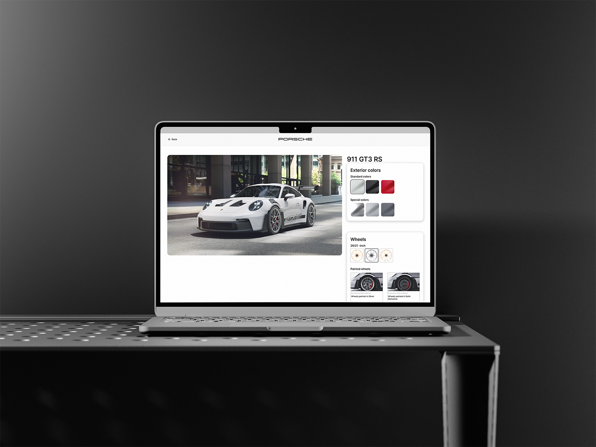
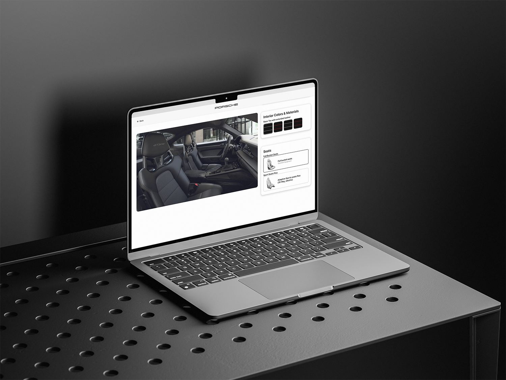

Web Design
Porsche 공식 웹사이트를 새로운 시각으로 재구성한 리디자인 프로젝트입니다.
자동차의 역동성과 브랜드의 고급스러움을 웹 경험으로 극대화하는 것을 목표로, 풀스크린 비주얼과 시네마틱한 스크롤 인터랙션을 중심으로 설계했습니다. 모델별 개성을 살린 색상 체계와 타이포그래피를 적용했습니다.


럭셔리 자동차 브랜드 웹 사이트 분석. Porsche, Ferrari, Lamborghini의 UX 패턴과 비주얼 언어를 비교했습니다.
풀스크린 시네마틱 경험 설계. 자동차의 역동성과 브랜드의 고급스러움을 스크롤 경험으로 극대화했습니다.
모델별 독립 색상 체계 구축. 911, Cayenne, Taycan 각 모델의 개성을 반영한 팔레트를 설계했습니다.
스크롤 기반 인터랙션 설계. 뷰포트를 가득 채우는 이미지 전환과 텍스트 연출을 완성했습니다.